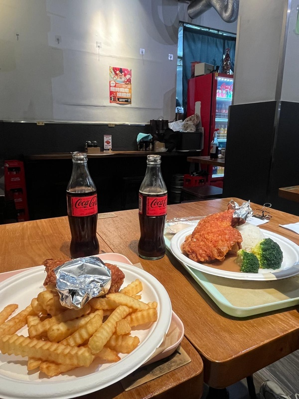

Western Food in Hong Kong: “Soy Sauce Western”
Around week three you'll miss a burger. Hong Kong has western food, but much of it is its own style, called “soy sauce western” (豉油西餐). It started in the 1950s as a local take on European dishes.
What to expect
- Baked pork chop rice. Pork chop, fried rice, tomato sauce and melted cheese, baked. The unofficial student comfort food. About HK$60–80.
- Borscht. Made with tomato and cabbage, not beetroot.
- Sizzling steak. Comes on a hot iron plate with black pepper sauce, sometimes with spaghetti on the side.
- Sandwiches with the crusts cut off, like corned beef and egg.

Where to find it
You'll find it in any cha chaan teng and in older western cafés around Tsim Sha Tsui and Wan Chai. Save the expensive European restaurants in Central for when your parents visit.